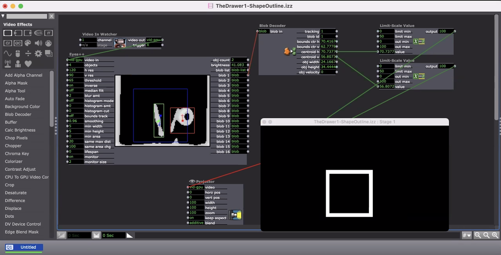
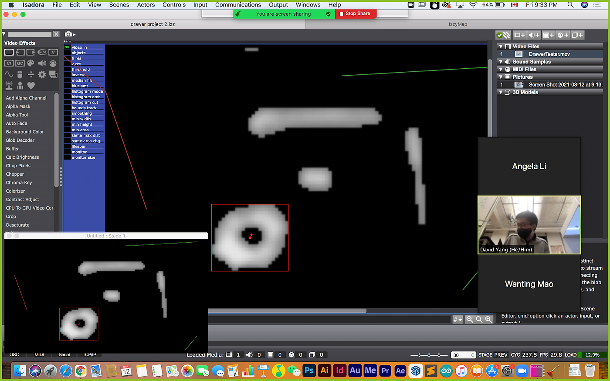
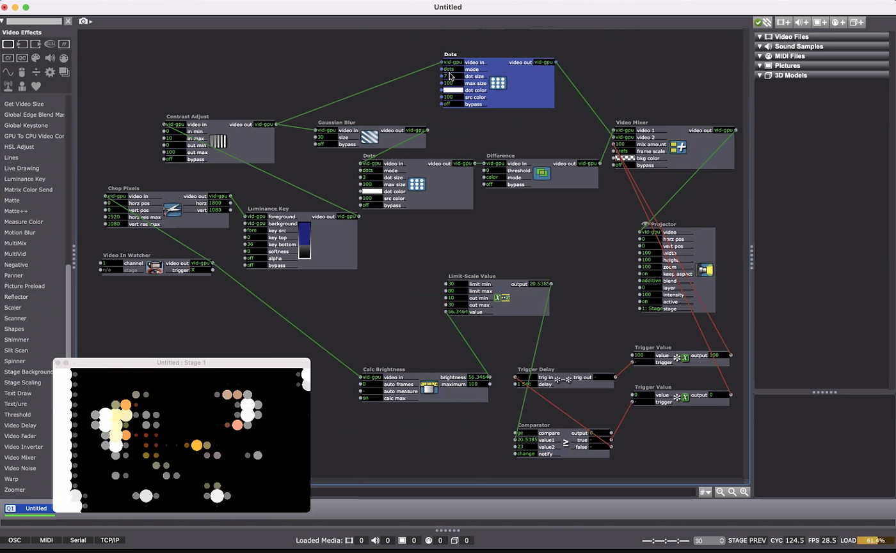

2021
An interactive desk
made with Isadora
Collaborators: David Yang, Angela Li
You can put things into the drawer, take things out, move stuff around, and observe what happens on top of the desk!
For this project, we wanted to convey the idea of surface-level simplicity
from a minimalist approach. There are essentially 3 layers to the project.
The desk top – what we see (perception). Inside the desk drawer- what is
actually there (reality). Below the desk drawer- the deeper meaning,
the truth, the process.
The Desk is a minimalist form of how we perceive reality. It acted as our mind.
When we place anything from reality to our mind, the reality flees away
and transforms to different levels of thoughts.
The object is shown in its abstract/minimal form when looking at the
surface of the desk. The object’s back/shadow is shown when looking from
when looking underneath the desk. No matter how we perceive the object,
it will never be what it truly is. The only way to see the object for
what it is is to take the object out of the drawer.
This is perhaps a reimagination of commentary to the minimalism art movement.
To display the shapes in the projection, we tested out 3 methods.
Method 1: Attaching a rectangle shape to each detected “blob” and
connect its centroid h and centroid v to the width and height of
the shape. Then projecting the shapes onto the surface of the desk.

Method 2: Screen capturing the monitor from Eyes++ using
Syphoner to project the blobs onto the surface of the desk.

Method 3: Applying filters to capture the outline and color of each
shape and projecting each shape’s outline onto the surface of the desk.

The desk is made out of a foam board, LED strips, and a two way mirror. We used hot glue to glue the form board and AB glue to glue the mirror. The mirror actually has a really cool reflection when you open the drawer. The problem with using the form board is that the desk became too light and easily shifted and bruised. Also, the drawer lacks a sliding mechanism to make it work properly. Another challenge we have faced is the webcam auto exposure. The auto exposure makes it hard to luma key the object from below consistently.
If we were to develop this further, it doesn’t have to be limited to a drawer, we could use an entire wall that splits a room into two, and project people’s outlines onto both sides. It could even be in two entirely different locations where people from different places can feel the presence of others from their outlines.